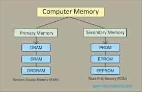

Computer Memory
Update:24/07/2019 By Oscuro Smith.
The system memory is the place where the computer holds current programs and data that are in use. There are various levels of computer memory, including ROM, RAM, cache, page and graphics, each with specific objectives for system operation. This section focuses on the role of computer memory, and the technology behind it.
Although memory is used in many different forms around modern PC systems, it can be divided into two essential types: RAM and ROM. ROM, or Read Only Memory, is relatively small, but essential to how a computer works. ROM is always found on motherboards, but is increasingly found on graphics cards and some other expansion cards and peripherals. Generally speaking, ROM does not change. It forms the basic instruction set for operating the hardware in the system, and the data within remains intact even when the computer is shut down. It is possible to update ROM, but it’s only done rarely, and at need. If ROM is damaged, the computer system simply cannot function.
RAM, or Random Access Memory, is “volatile.” This means that it only holds data while power is present. RAM changes constantly as the system operates, providing the storage for all data required by the operating system and software. Because of the demands made by increasingly powerful operating systems and software, system RAM requirements have accelerated dramatically over time. For instance, at the turn of the millennium a typical computer may have only 128Mb of RAM in total, but in 2007 computers commonly ship with 2Gb of RAM installed, and may include graphics cards with their own additional 512Mb of RAM and more.

Clearly, modern computers have significantly more memory than the first PCs of the early 1980s, and this has had an effect on development of the PC’s architecture. The trouble is, storing and retrieving data from a large block of memory is more time-consuming than from a small block. With a large amount of memory, the difference in time between a register access and a memory access is very great, and this has resulted in extra layers of cache in the storage hierarchy.
When accessing memory, a fast processor will demand a great deal from RAM. At worst, the CPU may have to waste clock cycles while it waits for data to be retrieved. Faster memory designs and motherboard buses can help, but since the 1990s “cache memory” has been employed as standard between the main memory and the processor. Not only this, CPU architecture has also evolved to include ever larger internal caches. The organisation of data this way is immensely complex, and the system uses ingenious electronic controls to ensure that the data the processor needs next is already in cache, physically closer to the processor and ready for fast retrieval and manipulation.
Read on for a closer look at the technology behind computer memory, and how developments in RAM and ROM have enabled systems to function with seemingly exponentially increasing power.